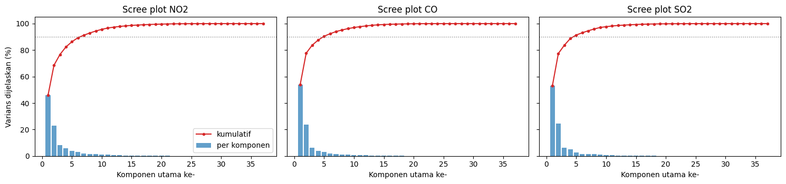
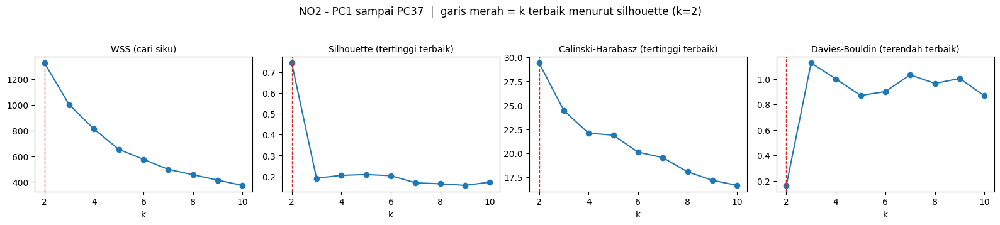
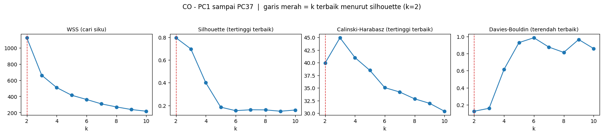

Modeling - K-Means Clustering pada Fitur TSFEL#
Dokumen ini adalah tahap Modeling pada kerangka CRISP-DM. Berbeda dari dokumen Data Understanding (satu kecamatan, satu mahasiswa), tahap ini memakai data ekstraksi fitur TSFEL dari banyak daerah yang dikumpulkan bersama oleh teman teman kelas. Tujuannya adalah mengelompokkan daerah daerah tersebut berdasarkan karakter deret waktu polutannya memakai K-Means, sekaligus menilai seberapa layak data ini dikelompokkan.
1. Pertanyaan yang Dijawab dan Rencana Analisis#
No |
Pertanyaan |
Dijawab pada |
|---|---|---|
1 |
Berapa jumlah cluster (k) terbaik pada K-Means? |
Bagian 5 dan 6.2 |
2 |
Bagaimana hasil reduksi dimensi PCA menjadi 37 komponen (PC1 sampai PC37)? |
Bagian 6.1 |
3 |
Dari PC1 sampai PC37, berapa k terbaik dan seberapa baik hasil cluster-nya? |
Bagian 6.2 dan 6.3 |
4 |
Seberapa baik data ini dapat dikelompokkan? |
Bagian 6.3, 8, 10, dan 11 |
5 |
Apakah hasilnya sama jika memakai 68 fitur asli tanpa PCA? |
Bagian 8 |
6 |
Bagaimana mengerjakannya di KNIME? |
Bagian 7 (PCA 37) dan 9 (68 fitur) |
Setiap analisis Python di dokumen ini diikuti langsung oleh satu bagian khusus untuk implementasi di KNIME, lengkap dengan langkah langkah node dan tempat untuk menempelkan hasil eksekusinya.
Semua sel kode di bawah benar benar dieksekusi saat buku dibangun, jadi seluruh angka yang tampil berasal dari data, bukan tabel statis.
2. Data yang Dipakai#
Tiga file CSV, satu per polutan, masing masing berisi hasil ekstraksi 68 fitur TSFEL untuk 37 daerah (satu baris per mahasiswa/daerah).
Kolom |
Isi |
|---|---|
|
Nomor baris pada sumber data. Bukan fitur, dan nilainya berbeda antar file, sehingga tidak boleh dipakai untuk menggabungkan file. |
|
Identitas baris (label). Bukan fitur numerik. |
68 kolom sisanya |
Fitur TSFEL (statistical, temporal, spectral, fractal), lihat Bagian 12 dokumen Data Understanding. |
Karena id tidak konsisten antar file dan penulisan nama sedikit berbeda
(misalnya A.Choiril dan A. Choiril), analisis dilakukan terpisah
per polutan. Menggabungkan ketiga polutan menjadi 204 fitur per daerah
mungkin dilakukan pada tahap lanjutan, dengan menormalkan nama terlebih
dahulu.
import os
import warnings
import numpy as np
import pandas as pd
import matplotlib.pyplot as plt
from scipy.spatial.distance import pdist
from sklearn.preprocessing import StandardScaler
from sklearn.decomposition import PCA
from sklearn.cluster import KMeans
from sklearn.metrics import (
silhouette_score,
calinski_harabasz_score,
davies_bouldin_score,
adjusted_rand_score,
)
warnings.filterwarnings("ignore", category=FutureWarning)
SEED = 42
POLUTAN = ["NO2", "CO", "SO2"]
META = ["id", "nama", "daerah"]
K_RANGE = range(2, 11) # k = 2 sampai 10
N_KOMPONEN = 37 # jumlah komponen PCA yang diminta
pd.set_option("display.width", 200)
def cari_file(nama_file):
# mencoba beberapa lokasi umum agar sel ini aman dijalankan dari
# folder notebook maupun dari root proyek
for basis in ["", "data/", "../data/", "../", "../../data/"]:
if os.path.exists(basis + nama_file):
return basis + nama_file
raise FileNotFoundError(nama_file)
raw = {p: pd.read_csv(cari_file(f"ekstraksi_fitur_{p.lower()}.csv")) for p in POLUTAN}
pd.DataFrame({
"Polutan": POLUTAN,
"Baris (daerah)": [raw[p].shape[0] for p in POLUTAN],
"Kolom total": [raw[p].shape[1] for p in POLUTAN],
"Kolom fitur": [raw[p].shape[1] - len(META) for p in POLUTAN],
"Nilai hilang": [int(raw[p].isna().sum().sum()) for p in POLUTAN],
})
| Polutan | Baris (daerah) | Kolom total | Kolom fitur | Nilai hilang | |
|---|---|---|---|---|---|
| 0 | NO2 | 37 | 71 | 68 | 0 |
| 1 | CO | 37 | 71 | 68 | 0 |
| 2 | SO2 | 37 | 71 | 68 | 0 |
3. Pemeriksaan Kualitas Data Sebelum Clustering#
K-Means berbasis jarak Euclidean, sehingga satu baris yang skalanya menyimpang jauh dapat mendominasi seluruh hasil. Karena data berasal dari banyak orang yang mengekstrak sendiri sendiri, perlu dicek dulu apakah semua baris sebanding. Dua pemeriksaan dipakai:
Rasio skala =
calc_maxbaris tersebut dibagi mediancalc_maxseluruh baris. Nilai mendekati 1 berarti setara. Nilai ribuan atau lebih menandakan satuan atau skala yang berbeda (mis. hasil konversi satuan).Rasio panjang deret =
ecdf_percentile_countbaris tersebut dibagi mediannya. Fitur ini (bersamacalc_centroid,distance,auc,abs_energy) membesar seiring jumlah titik data, sehingga rasio ini dipakai sebagai perkiraan kasar panjang deret. Deret sepanjang 366 hari akan memberi rasio sekitar 1.
Baris ditandai untuk dikeluarkan pada Skenario B bila rasio skala > 100 atau rasio panjang > 3. Baris dengan deret jauh lebih pendek (rasio < 0.7) hanya dicatat, tidak dikeluarkan.
def cek_konsistensi(df):
X = df.drop(columns=META)
rasio_skala = X["calc_max"].abs() / X["calc_max"].abs().median()
rasio_panjang = X["ecdf_percentile_count"] / X["ecdf_percentile_count"].median()
tabel = df[["nama", "daerah"]].copy()
tabel["rasio_skala"] = rasio_skala
tabel["rasio_panjang"] = rasio_panjang
tabel["dikeluarkan_B"] = (rasio_skala > 100) | (rasio_panjang > 3)
return tabel
konsistensi = {p: cek_konsistensi(raw[p]) for p in POLUTAN}
keluarkan = {
p: konsistensi[p].loc[konsistensi[p]["dikeluarkan_B"], "nama"].tolist()
for p in POLUTAN
}
catatan = []
for p in POLUTAN:
t = konsistensi[p]
t = t[t["dikeluarkan_B"] | (t["rasio_panjang"] < 0.7)].copy()
t.insert(0, "Polutan", p)
catatan.append(t)
catatan = pd.concat(catatan, ignore_index=True)
catatan["Status"] = np.where(catatan["dikeluarkan_B"], "dikeluarkan di Skenario B", "hanya dicatat")
catatan[["Polutan", "nama", "daerah", "rasio_skala", "rasio_panjang", "Status"]].round(2)
| Polutan | nama | daerah | rasio_skala | rasio_panjang | Status | |
|---|---|---|---|---|---|---|
| 0 | NO2 | Robbaniyah Umdatun Ni'mah | Cerme, Gresik | 1.86 | 0.63 | hanya dicatat |
| 1 | NO2 | Marshella Aulia Putri | Kec. Kalianget, Sumenep | 0.50 | 0.53 | hanya dicatat |
| 2 | NO2 | Dewi Geizya | Kamal, Banyuajuh | 1165623.73 | 1.00 | dikeluarkan di Skenario B |
| 3 | CO | Marshella Aulia Putri | Kec. Kalianget, Sumenep | 0.93 | 0.55 | hanya dicatat |
| 4 | CO | Muhammad Zaidan Nabil Rafi | Kamal, Bangkalan | 1.00 | 14.07 | dikeluarkan di Skenario B |
| 5 | CO | Dewi Geizya | Kamal, Banyuajuh | 56544.64 | 1.00 | dikeluarkan di Skenario B |
| 6 | SO2 | Marshella Aulia Putri | Kec. Kalianget, Sumenep | 0.77 | 0.65 | hanya dicatat |
| 7 | SO2 | Muhammad Zaidan Nabil Rafi | Kamal, Bangkalan | 1.73 | 14.07 | dikeluarkan di Skenario B |
| 8 | SO2 | Dewi Geizya | Kamal, Banyuajuh | 92418.60 | 1.00 | dikeluarkan di Skenario B |
Temuan pada tabel di atas perlu dibaca dengan hati hati:
Dewi Geizya (Kamal, Banyuajuh) memiliki nilai fitur berskala puluhan ribu sampai jutaan kali lebih besar pada ketiga polutan (misalnya rata rata NO2 sekitar 33.6, sedangkan baris lain sekitar 0.00003). Ini hampir pasti akibat perbedaan satuan atau kesalahan ekstraksi, bukan kondisi udara yang sebenarnya.
Muhammad Zaidan Nabil Rafi (Kamal, Bangkalan) pada CO dan SO2 memiliki deret sekitar 14 kali lebih panjang dari baris lain, tanda bahwa data yang diekstrak berbeda cakupan atau resolusi waktu (bukan 365 sampai 366 hari). Pada NO2 barisnya normal.
Marshella Aulia Putri dan Robbaniyah Umdatun Ni’mah memiliki deret yang lebih pendek (sekitar separuh sampai tiga perempat panjang normal). Ini masih mungkin wajar (mis. lebih banyak hari tanpa data valid), sehingga hanya dicatat.
Saran tindak lanjut. Dua temuan pertama sebaiknya dikonfirmasi ke pemilik datanya dan diekstrak ulang (periksa satuan, dan pastikan sinyal sudah di-reindex ke 366 hari seperti pada Bagian 12 Data Understanding). Sampai itu dilakukan, analisis dijalankan dalam dua skenario:
Skenario A memakai data apa adanya (37 baris). Ini yang sesuai permintaan awal (PCA 37 komponen dari 37 daerah).
Skenario B memakai data tanpa baris yang ditandai di atas (36 baris untuk NO2, 35 baris untuk CO dan SO2), sebagai uji sensitivitas (Bagian 10).
4. Persiapan Data: Fitur Konstan dan Standardisasi#
Fitur konstan dibuang. Fitur yang nilainya sama pada semua baris (varians nol) tidak membawa informasi dan membuat standardisasi (pembagian dengan simpangan baku) tidak terdefinisi. Karena itu, dari “68 fitur” yang benar benar dipakai adalah 66 (NO2, SO2) dan 65 (CO), seperti terlihat pada tabel di bawah.
Standardisasi z-score wajib. Skala antar fitur TSFEL sangat berbeda
(misalnya abs_energy pada orde 1e-6, sedangkan zero_cross berupa
bilangan bulat ratusan). Tanpa standardisasi, fitur berskala besar akan
mendominasi jarak Euclidean dan PCA. Setiap fitur diubah menjadi
(x - rata rata) / simpangan baku sehingga bermean 0 dan bervarians 1.
Kolom id tidak ikut karena bukan fitur.
def siapkan(df, keluarkan_nama=()):
d = df[~df["nama"].isin(keluarkan_nama)].reset_index(drop=True)
X = d.drop(columns=META)
konstan = X.columns[X.std(ddof=0) == 0].tolist()
X = X.drop(columns=konstan)
Z = StandardScaler().fit_transform(X)
return d[META], X, Z, konstan
A = {p: siapkan(raw[p]) for p in POLUTAN} # Skenario A: data apa adanya
pd.DataFrame({
"Polutan": POLUTAN,
"Baris": [A[p][2].shape[0] for p in POLUTAN],
"Fitur dipakai": [A[p][2].shape[1] for p in POLUTAN],
"Fitur konstan dibuang": [", ".join(A[p][3]) for p in POLUTAN],
})
| Polutan | Baris | Fitur dipakai | Fitur konstan dibuang | |
|---|---|---|---|---|
| 0 | NO2 | 37 | 66 | human_range_energy, spectral_roll_on |
| 1 | CO | 37 | 65 | human_range_energy, spectral_roll_on, zero_cross |
| 2 | SO2 | 37 | 66 | human_range_energy, spectral_roll_on |
5. Cara Menentukan Jumlah Cluster (k) Terbaik#
K-Means tidak menentukan k sendiri, sehingga k dicari dengan
membandingkan beberapa nilai k (2 sampai 10) memakai empat ukuran. Untuk
tiap k, K-Means dijalankan dengan n_init=50 (50 inisialisasi acak, dipilih
yang terbaik) dan random_state=42 agar hasilnya dapat direproduksi.
Ukuran |
Cara membaca |
k terbaik |
|---|---|---|
WSS (inertia, metode elbow) |
Jumlah kuadrat jarak titik ke pusat clusternya. Selalu turun saat k naik, jadi dicari “siku” tempat penurunannya mulai melandai. |
Siku kurva |
Silhouette |
Rata rata seberapa dekat titik ke clusternya dibanding cluster tetangga terdekat. Rentang -1 sampai 1. |
Nilai tertinggi |
Calinski-Harabasz |
Rasio sebaran antar cluster terhadap sebaran dalam cluster. |
Nilai tertinggi |
Davies-Bouldin |
Rata rata kemiripan tiap cluster dengan cluster terdekatnya. |
Nilai terendah |
Selain itu dihitung dua ukuran pendukung:
Cluster terkecil: jumlah anggota cluster paling kecil. Nilai 1 berarti ada cluster yang hanya berisi satu daerah, yang pada praktiknya adalah pencilan, bukan kelompok.
Stabilitas (ARI): rata rata Adjusted Rand Index antara hasil pada data penuh dan hasil pada 30 subsampel acak berisi 80% baris. Nilai 1 berarti pengelompokan tidak berubah saat sebagian data dibuang. Untuk solusi yang memuat cluster satu anggota, nilai ini kurang bermakna (bila titik itu ikut terbuang, strukturnya hilang).
Aturan keputusan yang dipakai: k terbaik adalah k dengan silhouette tertinggi, lalu hasilnya dicek terhadap ukuran cluster terkecil dan stabilitas. Kategori nilai silhouette mengikuti Kaufman dan Rousseeuw (1990):
Silhouette rata rata |
Tafsir |
|---|---|
0.71 - 1.00 |
Struktur cluster kuat |
0.51 - 0.70 |
Struktur cukup wajar |
0.26 - 0.50 |
Struktur lemah, mungkin buatan |
<= 0.25 |
Tidak ada struktur cluster yang berarti |
def stabilitas_bootstrap(M, labels, k, n_ulang=30, frac=0.8):
rng = np.random.default_rng(SEED + k)
n = M.shape[0]
skor = []
for b in range(n_ulang):
idx = rng.choice(n, size=int(frac * n), replace=False)
km_b = KMeans(n_clusters=k, n_init=5, random_state=b).fit(M[idx])
skor.append(adjusted_rand_score(labels[idx], km_b.labels_))
return float(np.mean(skor))
def evaluasi_k(M, k_range=K_RANGE):
baris = []
for k in k_range:
km = KMeans(n_clusters=k, n_init=50, random_state=SEED).fit(M)
lab = km.labels_
baris.append({
"k": k,
"WSS": km.inertia_,
"Silhouette": silhouette_score(M, lab),
"Calinski-Harabasz": calinski_harabasz_score(M, lab),
"Davies-Bouldin": davies_bouldin_score(M, lab),
"Cluster terkecil": int(np.bincount(lab).min()),
"Stabilitas (ARI)": stabilitas_bootstrap(M, lab, k),
})
t = pd.DataFrame(baris).set_index("k")
t["Turun WSS (%)"] = -t["WSS"].pct_change() * 100
return t
def gambar_evaluasi(tabel, judul):
k_best = tabel["Silhouette"].idxmax()
fig, ax = plt.subplots(1, 4, figsize=(16, 3.4))
panel = [
("WSS", "WSS (cari siku)"),
("Silhouette", "Silhouette (tertinggi terbaik)"),
("Calinski-Harabasz", "Calinski-Harabasz (tertinggi terbaik)"),
("Davies-Bouldin", "Davies-Bouldin (terendah terbaik)"),
]
for a, (kolom, judul_panel) in zip(ax, panel):
a.plot(tabel.index, tabel[kolom], marker="o")
a.axvline(k_best, color="tab:red", ls="--", lw=1)
a.set_title(judul_panel, fontsize=10)
a.set_xlabel("k")
fig.suptitle(f"{judul} | garis merah = k terbaik menurut silhouette (k={k_best})", y=1.04)
fig.tight_layout()
plt.show()
return k_best
def tafsir_silhouette(s):
if s > 0.70:
return "kuat"
if s > 0.50:
return "cukup wajar"
if s > 0.25:
return "lemah"
return "tidak ada struktur berarti"
def tabel_ringkasan(eval_d, best_d, matriks_d, meta_d):
baris = []
for p in POLUTAN:
k = best_d[p]
r = eval_d[p].loc[k]
lab = KMeans(n_clusters=k, n_init=50, random_state=SEED).fit_predict(matriks_d[p])
ukuran = np.bincount(lab)
kecil = np.argmin(ukuran)
anggota_kecil = meta_d[p]["nama"][lab == kecil].tolist() if ukuran[kecil] <= 3 else "-"
baris.append({
"Polutan": p,
"k terbaik": k,
"Silhouette": r["Silhouette"],
"Tafsir": tafsir_silhouette(r["Silhouette"]),
"Ukuran cluster": sorted(ukuran, reverse=True),
"Anggota cluster terkecil (jika <= 3)": anggota_kecil,
"Stabilitas (ARI)": r["Stabilitas (ARI)"],
})
return pd.DataFrame(baris).set_index("Polutan")
6. Analisis 1: PCA 37 Komponen lalu K-Means (Skenario A)#
6.1 Reduksi Dimensi menjadi 37 Komponen (PC1 sampai PC37)#
Data z-score tiap polutan (37 baris x 65 atau 66 fitur) diproyeksikan dengan PCA menjadi 37 komponen utama.
Ada satu fakta matematis yang menentukan cara membaca seluruh hasil
berikutnya. Jumlah komponen PCA tidak bisa melebihi
min(jumlah baris, jumlah fitur), yaitu min(37, 66) = 37. Jadi 37
adalah batas maksimum, bukan angka pemampatan. Lebih jauh lagi,
karena data sudah dipusatkan (mean 0), 37 baris hanya membentang ruang
berdimensi paling banyak 36 (rank = n - 1). Akibatnya:
PC37 memiliki varians nol (nilainya hanya sisa galat numerik, sekitar 1e-33; lihat kolom
Varians PC37di bawah).PC1 sampai PC37 menyimpan 100% varians data. Tidak ada informasi yang dibuang; PCA di sini hanya memutar sumbu koordinat.
def jalankan_pca(Z, n_komponen=N_KOMPONEN):
n_komponen = min(n_komponen, *Z.shape)
pca = PCA(n_components=n_komponen, random_state=SEED).fit(Z)
return pca, pca.transform(Z)
PCA_A = {p: jalankan_pca(A[p][2]) for p in POLUTAN}
ringkas = []
for p in POLUTAN:
pca, P = PCA_A[p]
kum = np.cumsum(pca.explained_variance_ratio_)
ringkas.append({
"Polutan": p,
"Baris x Fitur": f"{A[p][2].shape[0]} x {A[p][2].shape[1]}",
"Jumlah komponen": P.shape[1],
"Rank data": int(np.linalg.matrix_rank(A[p][2])),
"PC1 (%)": kum[0] * 100,
"PC1-2 (%)": kum[1] * 100,
"PC1-5 (%)": kum[4] * 100,
"PC1-10 (%)": kum[9] * 100,
"Komponen utk 90%": int(np.argmax(kum >= 0.90) + 1),
"Komponen utk 95%": int(np.argmax(kum >= 0.95) + 1),
"PC1-37 (%)": kum[-1] * 100,
"Varians PC37": f"{pca.explained_variance_[-1]:.1e}",
})
pd.DataFrame(ringkas).set_index("Polutan").round(4)
| Baris x Fitur | Jumlah komponen | Rank data | PC1 (%) | PC1-2 (%) | PC1-5 (%) | PC1-10 (%) | Komponen utk 90% | Komponen utk 95% | PC1-37 (%) | Varians PC37 | |
|---|---|---|---|---|---|---|---|---|---|---|---|
| Polutan | |||||||||||
| NO2 | 37 x 66 | 37 | 36 | 45.8151 | 68.5793 | 86.2886 | 95.6579 | 7 | 10 | 100.0 | 1.8e-31 |
| CO | 37 x 65 | 37 | 36 | 53.9550 | 77.6264 | 90.4670 | 97.0289 | 5 | 8 | 100.0 | 1.9e-31 |
| SO2 | 37 x 66 | 37 | 36 | 53.0483 | 77.4551 | 91.4009 | 97.6745 | 5 | 8 | 100.0 | 2.4e-31 |
fig, ax = plt.subplots(1, 3, figsize=(15, 3.6), sharey=True)
for a, p in zip(ax, POLUTAN):
ev = PCA_A[p][0].explained_variance_ratio_ * 100
a.bar(range(1, len(ev) + 1), ev, alpha=0.7, label="per komponen")
a.plot(range(1, len(ev) + 1), np.cumsum(ev), color="tab:red", marker=".", label="kumulatif")
a.axhline(90, color="gray", ls=":", lw=1)
a.set_title(f"Scree plot {p}")
a.set_xlabel("Komponen utama ke-")
ax[0].set_ylabel("Varians dijelaskan (%)")
ax[0].legend()
fig.tight_layout()
plt.show()

Sebagian besar informasi terkumpul pada beberapa komponen pertama (sekitar 96 sampai 98 persen varians pada 10 komponen pertama), sedangkan komponen komponen belakang nyaris tidak membawa informasi. Artinya 37 komponen sebenarnya jauh lebih banyak dari yang dibutuhkan; ini diperhatikan lagi pada uji jumlah PC di Bagian 6.3.
6.2 Menentukan Jumlah Cluster Terbaik pada PC1 sampai PC37#
K-Means dijalankan pada seluruh 37 komponen (PC1 sampai PC37) untuk k = 2 sampai 10, lalu dievaluasi memakai empat ukuran pada Bagian 5.
EVAL_A1, BEST_A1 = {}, {}
for p in POLUTAN:
EVAL_A1[p] = evaluasi_k(PCA_A[p][1])
BEST_A1[p] = gambar_evaluasi(EVAL_A1[p], f"{p} - PC1 sampai PC37")


---------------------------------------------------------------------------
KeyboardInterrupt Traceback (most recent call last)
Cell In[7], line 3
1 EVAL_A1, BEST_A1 = {}, {}
2 for p in POLUTAN:
----> 3 EVAL_A1[p] = evaluasi_k(PCA_A[p][1])
4 BEST_A1[p] = gambar_evaluasi(EVAL_A1[p], f"{p} - PC1 sampai PC37")
Cell In[4], line 15, in evaluasi_k(M, k_range)
13 baris = []
14 for k in k_range:
---> 15 km = KMeans(n_clusters=k, n_init=50, random_state=SEED).fit(M)
16 lab = km.labels_
17 baris.append({
18 "k": k,
19 "WSS": km.inertia_,
(...)
24 "Stabilitas (ARI)": stabilitas_bootstrap(M, lab, k),
25 })
File ~\AppData\Local\Programs\Python\Python39\lib\site-packages\sklearn\base.py:1389, in _fit_context.<locals>.decorator.<locals>.wrapper(estimator, *args, **kwargs)
1382 estimator._validate_params()
1384 with config_context(
1385 skip_parameter_validation=(
1386 prefer_skip_nested_validation or global_skip_validation
1387 )
1388 ):
-> 1389 return fit_method(estimator, *args, **kwargs)
File ~\AppData\Local\Programs\Python\Python39\lib\site-packages\sklearn\cluster\_kmeans.py:1510, in KMeans.fit(self, X, y, sample_weight)
1507 print("Initialization complete")
1509 # run a k-means once
-> 1510 labels, inertia, centers, n_iter_ = kmeans_single(
1511 X,
1512 sample_weight,
1513 centers_init,
1514 max_iter=self.max_iter,
1515 verbose=self.verbose,
1516 tol=self._tol,
1517 n_threads=self._n_threads,
1518 )
1520 # determine if these results are the best so far
1521 # we chose a new run if it has a better inertia and the clustering is
1522 # different from the best so far (it's possible that the inertia is
1523 # slightly better even if the clustering is the same with potentially
1524 # permuted labels, due to rounding errors)
1525 if best_inertia is None or (
1526 inertia < best_inertia
1527 and not _is_same_clustering(labels, best_labels, self.n_clusters)
1528 ):
File ~\AppData\Local\Programs\Python\Python39\lib\site-packages\sklearn\utils\parallel.py:164, in _threadpool_controller_decorator.<locals>.decorator.<locals>.wrapper(*args, **kwargs)
161 @functools.wraps(func)
162 def wrapper(*args, **kwargs):
163 controller = _get_threadpool_controller()
--> 164 with controller.limit(limits=limits, user_api=user_api):
165 return func(*args, **kwargs)
File ~\AppData\Local\Programs\Python\Python39\lib\site-packages\threadpoolctl.py:921, in ThreadpoolController.limit(self, limits, user_api)
870 @_format_docstring(
871 USER_APIS=", ".join('"{}"'.format(api) for api in _ALL_USER_APIS),
872 BLAS_LIBS=", ".join(_ALL_BLAS_LIBRARIES),
873 OPENMP_LIBS=", ".join(_ALL_OPENMP_LIBRARIES),
874 )
875 def limit(self, *, limits=None, user_api=None):
876 """Change the maximal number of threads that can be used in thread pools.
877
878 This function returns an object that can be used either as a callable (the
(...)
919 - If None, this function will apply to all supported libraries.
920 """
--> 921 return _ThreadpoolLimiter(self, limits=limits, user_api=user_api)
File ~\AppData\Local\Programs\Python\Python39\lib\site-packages\threadpoolctl.py:587, in _ThreadpoolLimiter.__init__(self, controller, limits, user_api)
583 self._limits, self._user_api, self._prefixes = self._check_params(
584 limits, user_api
585 )
586 self._original_info = self._controller.info()
--> 587 self._set_threadpool_limits()
File ~\AppData\Local\Programs\Python\Python39\lib\site-packages\threadpoolctl.py:720, in _ThreadpoolLimiter._set_threadpool_limits(self)
717 continue
719 if num_threads is not None:
--> 720 lib_controller.set_num_threads(num_threads)
File ~\AppData\Local\Programs\Python\Python39\lib\site-packages\threadpoolctl.py:199, in OpenBLASController.set_num_threads(self, num_threads)
197 set_num_threads_func = self._get_symbol("openblas_set_num_threads")
198 if set_num_threads_func is not None:
--> 199 return set_num_threads_func(num_threads)
200 return None
KeyboardInterrupt:
for p in POLUTAN:
print(f"\n=== {p} (PC1-PC37) ===")
print(EVAL_A1[p].round(3).to_string())
Tabel acuan berikut merangkum silhouette per k untuk ketiga polutan. Simpan sebagai pembanding hasil KNIME pada Bagian 7.
pd.DataFrame({p: EVAL_A1[p]["Silhouette"] for p in POLUTAN}).round(3)
6.3 Seberapa Baik Data Ini Dikelompokkan?#
tabel_ringkasan(EVAL_A1, BEST_A1, {p: PCA_A[p][1] for p in POLUTAN}, {p: A[p][0] for p in POLUTAN})
Jawaban singkat untuk Skenario A. k terbaik menurut silhouette adalah
k = 2 pada ketiga polutan, dengan silhouette sekitar 0.75 sampai 0.80
yang secara angka tergolong “kuat”. Angka ini menyesatkan. Tabel di
atas menunjukkan ukuran cluster [36, 1]: K-Means hanya memisahkan
satu daerah, yaitu Dewi Geizya, dari 36 daerah lainnya. Silhouette tinggi
di sini semata mencerminkan jauhnya satu titik pencilan dari semua titik
lain, bukan adanya dua kelompok alami. Beberapa bukti pendukung:
Kolom “Cluster terkecil” pada tabel per k di Bagian 6.2 bernilai 1 untuk semua k dari 2 sampai 10. Selalu ada daerah yang berdiri sendiri.
Pada plot PC1 vs PC2 di bawah, satu titik tampak terpisah jauh dari awan titik lainnya (dan pada CO serta SO2 ada satu titik lagi yang menjauh pada PC2, yaitu Muhammad Zaidan Nabil Rafi).
Pencilan ini berasal dari masalah konsistensi data pada Bagian 3, bukan dari perbedaan kualitas udara antar daerah.
def gambar_scatter(pca_dict, k_dict, judul):
fig, ax = plt.subplots(1, 3, figsize=(15, 4))
for a, p in zip(ax, POLUTAN):
pca, P = pca_dict[p]
lab = KMeans(n_clusters=k_dict[p], n_init=50, random_state=SEED).fit_predict(P)
a.scatter(P[:, 0], P[:, 1], c=lab, cmap="tab10", s=45, edgecolor="k", linewidth=0.4)
a.set_xlabel(f"PC1 ({pca.explained_variance_ratio_[0] * 100:.1f}%)")
a.set_ylabel(f"PC2 ({pca.explained_variance_ratio_[1] * 100:.1f}%)")
a.set_title(f"{p}, k={k_dict[p]}")
fig.suptitle(judul, y=1.02)
fig.tight_layout()
plt.show()
gambar_scatter(PCA_A, BEST_A1, "Skenario A: posisi tiap daerah pada PC1 vs PC2 (warna = cluster)")
Berapa baik hasil PC1 sampai PC37, dan apakah perlu 37 komponen? Sel berikut memakai hanya PC1 sampai PCm (untuk beberapa nilai m), mencari k terbaik, lalu melaporkan silhouette dan ukuran cluster terkecilnya. Ini menunjukkan apakah hasil bergantung pada jumlah komponen yang dipakai.
def k_terbaik_dan_skor(M):
skor, kecil = {}, {}
for k in K_RANGE:
lab = KMeans(n_clusters=k, n_init=20, random_state=SEED).fit_predict(M)
skor[k] = silhouette_score(M, lab)
kecil[k] = int(np.bincount(lab).min())
k_b = max(skor, key=skor.get)
return k_b, skor[k_b], kecil[k_b]
JUMLAH_PC = [2, 3, 5, 10, 15, 20, 30, 37]
sweep = {}
for m in JUMLAH_PC:
baris = {}
for p in POLUTAN:
k_b, s_b, kc = k_terbaik_dan_skor(PCA_A[p][1][:, :m])
baris[p] = f"k={k_b}, sil={s_b:.3f}, terkecil={kc}"
sweep[f"PC1-PC{m}"] = baris
pd.DataFrame(sweep).T
Dua hal terbaca dari tabel tersebut. Pertama, hasilnya konsisten: k terbaik tetap 2 berapa pun jumlah komponen yang dipakai, dan cluster terkecil tetap berisi satu daerah. Kedua, silhouette justru lebih tinggi saat komponen sedikit dan menurun saat komponen ditambah sampai 37. Kenaikan itu bukan tanda cluster yang lebih baik: cluster yang terbentuk tetap satu daerah pencilan. Penurunan silhouette saat komponen ditambah konsisten dengan gejala umum pada dimensi tinggi, yaitu jarak antar titik makin seragam dan komponen belakang (yang nyaris hanya berisi derau, lihat scree plot) ikut menambah jarak. Kesimpulannya, memakai seluruh 37 komponen tidak menambah kualitas pengelompokan; ia hanya memberi hasil yang setara dengan memakai semua fitur (dibuktikan pada Bagian 8).
7. Implementasi di KNIME: PCA 37 Komponen + K-Means#
Bagian ini adalah tempat mengerjakan Bagian 6 memakai KNIME Analytics Platform, agar hasil Python dapat dibandingkan langsung dengan KNIME. Nama node mengacu pada KNIME 5.x; letak atau nama opsi pada versi lain bisa sedikit berbeda, jadi gunakan kolom pencarian pada Node Repository untuk menemukan node yang dimaksud.
7.1 Gambaran Alur Kerja#
CSV Reader
-> Column Filter (buang id)
-> Low Variance Filter (buang fitur konstan)
-> Normalizer (z-score)
-> PCA (37 dimensi)
-> Counting Loop Start (9 putaran)
-> Math Formula (Variable) (k = putaran + 2)
-> k-Means (k dari flow variable)
-> Silhouette Coefficient
-> Loop End (Add iteration column)
-> Table View (baca silhouette tiap k)
Setelah k terbaik dipilih (cabang terpisah dari titik keluaran PCA):
PCA -> k-Means (k tetap) -> Color Manager -> Scatter Plot
-> GroupBy (hitung ukuran cluster)
-> Sorter -> CSV Writer
Alur ini dibuat satu kali untuk NO2, lalu disalin untuk CO dan SO2 dengan mengganti berkas pada CSV Reader.
7.2 Langkah Demi Langkah#
Langkah 1. Baca data (CSV Reader).
Tambahkan node CSV Reader, arahkan ke ekstraksi_fitur_no2.csv.
Pastikan opsi Has column header aktif dan pemisah kolom adalah koma.
Klik kanan node, pilih Output table dan periksa: 37 baris x 71
kolom; id bertipe angka bulat, nama dan daerah bertipe string, 68
kolom sisanya bertipe angka desimal (Number/double).
Langkah 2. Buang kolom id (Column Filter).
Sambungkan Column Filter, pada bagian Exclude pindahkan id.
id adalah nomor baris, bukan fitur; bila tertinggal, ia ikut
distandardisasi dan ikut dihitung dalam jarak K-Means, sehingga hasilnya
salah. Kolom nama dan daerah boleh tetap ada karena bertipe string
dan otomatis diabaikan oleh node numerik; keduanya berguna untuk
membaca hasil akhir.
Langkah 3. Buang fitur konstan (Low Variance Filter).
Sambungkan Low Variance Filter, atur Variance upper bound = 0
dan pilih semua kolom numerik. Node ini membuang fitur yang nilainya sama
di semua baris. Hasil yang diharapkan mengikuti Bagian 4: 66 kolom
numerik untuk NO2 dan SO2, 65 untuk CO (ditambah nama dan daerah).
Langkah 4. Standardisasi (Normalizer).
Sambungkan Normalizer, pilih mode Z-Score Normalization
(Gaussian) dan sertakan seluruh kolom numerik. Setelah ini, tiap
kolom bermean 0 dan simpangan baku 1. KNIME memakai simpangan baku
sampel (dibagi n - 1), sedangkan StandardScaler Python dibagi n. Selisihnya
konstan untuk semua kolom sehingga tidak mengubah hasil clustering
maupun silhouette; hanya nilai varians mentah yang berbeda sedikit.
Langkah 5. Reduksi dimensi (PCA).
Sambungkan node PCA (Node Repository: Analytics > Mining > PCA).
Atur jumlah dimensi tujuan menjadi 37 (kolom pengaturan Target
dimensions atau Dimensions to reduce to) dan aktifkan opsi
Replace original data columns agar hanya kolom komponen yang
tersisa. Node PCA tidak menstandardisasi sendiri, itulah sebabnya
Langkah 4 wajib dilakukan sebelumnya.
Hal yang perlu diperhatikan pada hasil PCA:
Kolom keluaran diberi nama
PCA dimension 0,PCA dimension 1, dan seterusnya, dimulai dari 0. JadiPCA dimension 0setara dengan PC1 di Python. Periksa nama kolom sebenarnya pada Output table.Tanda (plus atau minus) suatu komponen boleh berbeda dari Python. Itu wajar dan tidak memengaruhi jarak antar titik.
Komponen terakhir (
PCA dimension 36) hampir berisi nol karena data hanya berdimensi 36, sama seperti PC37 di Bagian 6.1. Bila node memberi peringatan atau galat pada 37 dimensi, turunkan menjadi 36; hasil clustering tidak berubah karena komponen ke-37 tidak membawa informasi.Untuk memeriksa proporsi varians, sambungkan Statistics ke keluaran data PCA dan bandingkan proporsi (varians tiap komponen dibagi total) dengan kolom
PC1 (%)dan seterusnya pada tabel Bagian 6.1. Jangan membandingkan nilai varians mentah karena beda penyebut (n vs n - 1).
Langkah 6. Buat perulangan untuk k = 2 sampai 10.
Sambungkan Counting Loop Start dan atur Number of loops = 9
(variabel currentIteration dimulai dari 0). Sambungkan
Math Formula (Variable) dengan ekspresi
$${IcurrentIteration}$$ + 2 dan namai variabel keluarannya k; pastikan
tipenya integer (aktifkan opsi konversi ke integer bila tersedia).
Bila perulangan terasa rumit, alternatifnya adalah menyalin node
k-Means dan Silhouette Coefficient sebanyak 9 kali dan mengisi k = 2
sampai 10 secara manual.
Langkah 7. Jalankan K-Means (k-Means). Sambungkan node k-Means (Analytics > Mining > Clustering) dan atur:
Pengaturan |
Nilai |
|---|---|
Number of clusters |
Hubungkan ke flow variable |
Initialization |
Random initialization dengan Use static random seed dicentang (mis. 42) |
Max. number of iterations |
99 (bawaan) |
Columns to use |
Mode Wildcard/Regex, pola |
Keluaran pertama berisi seluruh kolom masukan ditambah kolom Cluster
(nilai cluster_0, cluster_1, dan seterusnya).
Langkah 8. Hitung silhouette (Silhouette Coefficient).
Sambungkan Silhouette Coefficient, pilih kolom Cluster sebagai
kolom cluster dan kolom PCA dimension* sebagai kolom data (jarak
Euclidean). Node ini mengeluarkan koefisien silhouette per cluster dan
nilai keseluruhan; yang dibandingkan dengan Python adalah nilai
keseluruhan. Bila node ini tidak tersedia pada instalasi Anda, pasang
lewat File > Install KNIME Extensions, atau hitung silhouette dengan
node Python Script memakai silhouette_score dari scikit-learn.
Langkah 9. Kumpulkan hasil semua k (Loop End). Sambungkan Loop End dan aktifkan Add iteration column. Kolom iterasi dimulai dari 0, sehingga k = iterasi + 2. Buka Output table dan catat silhouette keseluruhan tiap k pada tabel isian Bagian 7.3.
KNIME tidak memberikan WSS, Calinski-Harabasz, maupun Davies-Bouldin secara langsung pada node k-Means. Untuk KNIME, cukup gunakan silhouette ditambah ukuran cluster sebagai dasar memilih k; ukuran lain sudah dihitung pada Python (Bagian 6.2).
Langkah 10. Lihat ukuran cluster dan sebaran (untuk k terbaik).
Buat cabang baru dari keluaran PCA: node k-Means dengan k diisi
langsung (tanpa loop) sesuai k terbaik, lalu:
GroupBy: kelompokkan berdasarkan
Clusterdengan agregasi Count. Hasilnya harus sama dengan kolom “Ukuran cluster” pada tabel ringkasan Bagian 6.3 (mis. 36 dan 1 pada Skenario A).Color Manager (warna berdasar
Cluster), lalu Scatter Plot dengan sumbu X =PCA dimension 0dan sumbu Y =PCA dimension 1. Bentuk sebarannya harus mirip plot PC1 vs PC2 pada Bagian 6.3.
Langkah 11. Ekspor keanggotaan cluster.
Sambungkan Sorter (urut Cluster) lalu CSV Writer dan simpan
sebagai hasil_knime_no2_pca37.csv (kolom nama, daerah, Cluster).
Langkah 12. Ulangi untuk CO dan SO2.
Salin seluruh cabang, ganti berkas pada CSV Reader ke
ekstraksi_fitur_co.csv dan ekstraksi_fitur_so2.csv.
7.3 Catatan agar Hasil KNIME Cocok dengan Python#
K-Means KNIME hanya satu kali inisialisasi, sedangkan Python di sini memilih yang terbaik dari 50 inisialisasi. Pada k besar, KNIME bisa berhenti di solusi lokal yang berbeda. Cocokkan pada k kecil (2 sampai 5) atau ganti static random seed beberapa kali dan ambil hasil yang paling sering muncul.
Nomor cluster boleh tertukar (
cluster_0di KNIME belum tentu 0 di Python). Yang dibandingkan adalah ukuran cluster dan siapa yang sekelompok, bukan nomornya.Pada Skenario A, hasil yang benar adalah satu cluster berisi satu daerah saja (Dewi Geizya). Bila KNIME menghasilkan pembagian lain pada k = 2, periksa lagi Langkah 2 (
idsudah dibuang?) dan Langkah 4 (sudah dinormalisasi sebelum PCA?).
7.4 Tempat Hasil Implementasi KNIME (Isi Setelah Dijalankan)#
Tempelkan tangkapan layar alur kerja dan hasilnya di sini, lalu isi tabel
pembanding. Hapus tanda komentar <!-- --> pada baris gambar setelah
berkasnya tersedia di folder buku.
Tabel pembanding silhouette (isi kolom KNIME dari Output table Loop End; kolom Python diambil dari tabel acuan Bagian 6.2):
Polutan |
k |
Silhouette Python |
Silhouette KNIME |
Ukuran cluster KNIME |
Cocok? |
|---|---|---|---|---|---|
NO2 |
2 |
0.745 |
|||
CO |
2 |
0.795 |
|||
SO2 |
2 |
0.789 |
8. Analisis 2: K-Means pada Fitur Asli (68 Fitur) Tanpa PCA#
Analisis yang sama diulang pada data z-score tanpa PCA, yaitu memakai seluruh fitur asli (68 kolom, atau 66 dan 65 kolom setelah fitur konstan dibuang pada Bagian 4). Cara evaluasinya identik dengan Bagian 6.2.
EVAL_A2, BEST_A2 = {}, {}
for p in POLUTAN:
EVAL_A2[p] = evaluasi_k(A[p][2])
BEST_A2[p] = gambar_evaluasi(EVAL_A2[p], f"{p} - fitur asli (z-score)")
for p in POLUTAN:
print(f"\n=== {p} (fitur asli, z-score) ===")
print(EVAL_A2[p].round(3).to_string())
tabel_ringkasan(EVAL_A2, BEST_A2, {p: A[p][2] for p in POLUTAN}, {p: A[p][0] for p in POLUTAN})
8.1 Mengapa Hasilnya Sama dengan PCA 37?#
Hasil pada fitur asli hampir identik dengan hasil PC1 sampai PC37. Ini bukan kebetulan, melainkan konsekuensi matematis:
Karena data dipusatkan, 37 baris hanya membentang ruang berdimensi 36. Seluruh baris berada di ruang yang sama dengan yang dibentuk oleh komponen komponen utama PCA.
PCA tanpa whitening hanyalah rotasi ke sumbu sumbu baru. Bila semua komponen yang membawa varians dipertahankan (di sini PC1 sampai PC36, dan PC37 bervarians nol), jarak Euclidean antar baris tidak berubah.
Fungsi tujuan K-Means (WSS) sepenuhnya ditentukan oleh jarak Euclidean antar titik. Jarak sama berarti solusi optimum yang sama.
Sel berikut membuktikannya secara numerik.
baris = []
for p in POLUTAN:
Z = A[p][2]
P = PCA_A[p][1]
k = BEST_A2[p]
lab_z = KMeans(n_clusters=k, n_init=50, random_state=SEED).fit_predict(Z)
lab_p = KMeans(n_clusters=k, n_init=50, random_state=SEED).fit_predict(P)
baris.append({
"Polutan": p,
"Selisih maks. jarak antar baris (Z vs PCA)": np.abs(pdist(Z) - pdist(P)).max(),
"k terbaik (PCA 37)": BEST_A1[p],
"k terbaik (fitur asli)": BEST_A2[p],
"ARI label pada k terbaik": adjusted_rand_score(lab_z, lab_p),
"Selisih silhouette maks. (k=2..10)": (EVAL_A1[p]["Silhouette"] - EVAL_A2[p]["Silhouette"]).abs().max(),
})
pd.DataFrame(baris).set_index("Polutan")
Selisih jarak berada pada orde galat pembulatan (sekitar 1e-14 atau lebih kecil), sehingga kedua ruang koordinat dapat dianggap sama. Pada k kecil, silhouette kedua analisis sama persis. Perbedaan kecil yang dapat muncul pada k besar (pada eksekusi ini: WSS dan silhouette CO pada k = 10) bukan berasal dari PCA, melainkan dari sifat acak K-Means: galat pembulatan yang sangat kecil mengubah pemilihan pusat awal, sehingga K-Means dapat berakhir di solusi lokal yang sedikit berbeda. Fakta ini sendiri menandakan solusi pada k besar tidak stabil.
Implikasinya. Pada data ini (37 baris), meminta PCA sebanyak 37 komponen tidak menghasilkan reduksi yang berarti, sehingga hasilnya sama dengan memakai semua fitur. PCA baru mengubah hasil bila jumlah komponen dipangkas (mis. cukup 90 sampai 95 persen varians, yaitu sekitar 5 sampai 10 komponen pada Skenario A; lihat tabel Bagian 6.1) atau bila memakai whitening.
9. Implementasi di KNIME: K-Means pada Fitur Asli (Tanpa PCA)#
Alurnya sama dengan Bagian 7, hanya tanpa node PCA. K-Means langsung memakai seluruh kolom numerik yang sudah dinormalisasi.
9.1 Gambaran Alur Kerja#
CSV Reader
-> Column Filter (buang id)
-> Low Variance Filter (buang fitur konstan)
-> Normalizer (z-score)
-> Counting Loop Start (9 putaran)
-> Math Formula (Variable) (k = putaran + 2)
-> k-Means (semua kolom numerik)
-> Silhouette Coefficient
-> Loop End (Add iteration column)
-> Table View
9.2 Langkah Demi Langkah#
Langkah 1 sampai 4 sama persis dengan Bagian 7.2 (CSV Reader,
Column Filter untuk membuang id, Low Variance Filter, Normalizer
z-score). Kemudian:
Langkah 5. Lewati PCA. Sambungkan keluaran Normalizer langsung ke Counting Loop Start.
Langkah 6. Perulangan k. Sama dengan Langkah 6 pada Bagian 7.2
(Counting Loop Start dengan 9 putaran, lalu Math Formula (Variable)
$${IcurrentIteration}$$ + 2 menjadi variabel k).
Langkah 7. k-Means. Pengaturannya sama dengan Bagian 7.2 kecuali
Columns to use: pilih seluruh kolom numerik hasil normalisasi (66
kolom untuk NO2 dan SO2, 65 untuk CO). Pastikan id tidak ikut.
Langkah 8 sampai 12. Silhouette Coefficient, Loop End, pemilihan k
terbaik, Scatter Plot, GroupBy, dan ekspor CSV dikerjakan seperti pada
Bagian 7.2. Perbedaannya hanya pada Scatter Plot: karena tidak ada
kolom PCA, tambahkan node PCA terpisah pada cabang visualisasi
(2 dimensi sudah cukup) atau gunakan dua fitur pilihan sebagai sumbu.
Simpan hasil ekspor sebagai hasil_knime_no2_fitur_asli.csv.
9.3 Membuktikan Kesamaan dengan Versi PCA (di KNIME)#
Untuk membuktikan bahwa versi 68 fitur dan versi PCA 37 menghasilkan pengelompokan yang sama, cocokkan keanggotaan cluster keduanya:
Baca
hasil_knime_no2_pca37.csvdanhasil_knime_no2_fitur_asli.csvmemakai dua node CSV Reader.Sambungkan keduanya ke node Joiner dengan kunci gabung
nama(bila ada nama ganda, tambahkandaerahsebagai kunci kedua). Ubah nama kolomClustermenjadiCluster_PCAdanCluster_Asli(lewat tab Column Selection Joiner atau node Column Rename).Sambungkan Crosstab (atau Pivoting) dengan
Cluster_PCAsebagai baris danCluster_Aslisebagai kolom.Hasil yang benar: setiap baris dan setiap kolom hanya memiliki satu sel bernilai tidak nol. Nomor cluster boleh tertukar, tetapi jumlah anggotanya harus sama.
9.4 Tempat Hasil Implementasi KNIME (Isi Setelah Dijalankan)#
Polutan |
k |
Silhouette Python |
Silhouette KNIME (68 fitur) |
Crosstab diagonal murni? |
|---|---|---|---|---|
NO2 |
2 |
0.745 |
||
CO |
2 |
0.795 |
||
SO2 |
2 |
0.789 |
10. Analisis Sensitivitas: Skenario B (Tanpa Baris Tidak Konsisten)#
Karena hasil Skenario A didominasi oleh baris yang bermasalah, analisis diulang setelah baris yang ditandai pada Bagian 3 dikeluarkan: Dewi Geizya pada ketiga polutan, serta Muhammad Zaidan Nabil Rafi pada CO dan SO2. Jumlah baris menjadi 36 (NO2) dan 35 (CO, SO2), sehingga jumlah komponen PCA maksimum turun menjadi 36 dan 35 (batas 37 tidak lagi tercapai). Karena hasil PCA dengan semua komponen sama dengan fitur asli (Bagian 8.1), K-Means langsung dijalankan pada data z-score; PCA dipakai hanya untuk plot.
B = {p: siapkan(raw[p], keluarkan[p]) for p in POLUTAN}
PCA_B = {p: jalankan_pca(B[p][2]) for p in POLUTAN}
EVAL_B, BEST_B = {}, {}
for p in POLUTAN:
EVAL_B[p] = evaluasi_k(B[p][2])
BEST_B[p] = gambar_evaluasi(EVAL_B[p], f"{p} - Skenario B (n={B[p][2].shape[0]}, {B[p][2].shape[1]} fitur)")
for p in POLUTAN:
print(f"\n=== {p} (Skenario B) ===")
print(EVAL_B[p].round(3).to_string())
tabel_ringkasan(EVAL_B, BEST_B, {p: B[p][2] for p in POLUTAN}, {p: B[p][0] for p in POLUTAN})
gambar_scatter(PCA_B, BEST_B, "Skenario B: posisi tiap daerah pada PC1 vs PC2 (warna = cluster)")
Berikut anggota tiap cluster pada k terbaik. Cluster besar tidak
diuraikan; daftar lengkap disimpan ke hasil_kmeans_python_skenario_B.csv
untuk dibandingkan dengan hasil KNIME.
baris, semua = [], []
for p in POLUTAN:
meta, X, Z, _ = B[p]
k = BEST_B[p]
lab = KMeans(n_clusters=k, n_init=50, random_state=SEED).fit_predict(Z)
tmp = meta.copy()
tmp.insert(0, "Polutan", p)
tmp["k"] = k
tmp["cluster"] = lab
semua.append(tmp)
for c in sorted(set(lab)):
anggota = meta["daerah"][lab == c].tolist()
baris.append({
"Polutan": p,
"Cluster": c,
"Jumlah": len(anggota),
"Daerah": "; ".join(anggota) if len(anggota) <= 9 else f"({len(anggota)} daerah, lihat CSV)",
})
pd.concat(semua, ignore_index=True).to_csv("hasil_kmeans_python_skenario_B.csv", index=False)
pd.DataFrame(baris).set_index(["Polutan", "Cluster"])
Cara membaca hasil Skenario B.
NO2: k terbaik = 2 dengan silhouette sekitar 0.33 (tergolong lemah), ukuran cluster 30 dan 6. Untuk k >= 3 silhouette turun ke kisaran 0.15 sampai 0.18, yaitu tidak ada struktur berarti.
CO: k terbaik = 2 dengan silhouette sekitar 0.49 (batas atas “lemah”), tetapi cluster kecilnya hanya berisi dua daerah, Marshella Aulia Putri (Kalianget, Sumenep) dan Robbaniyah Umdatun Ni’mah (Cerme, Gresik). Keduanya adalah dua daerah dengan deret data paling pendek pada CO (rasio panjang 0.55 untuk Marshella pada tabel Bagian 3, dan sekitar 0.72 untuk Robbaniyah, sedikit di atas ambang pencatatan), sehingga pemisahan ini patut dicurigai sebagai efek jumlah data valid, bukan perbedaan kualitas udara. Untuk k >= 3 silhouette hanya sekitar 0.22 ke bawah.
SO2: k terbaik = 3 dengan silhouette sekitar 0.25 (tepat di batas “tidak ada struktur berarti”), ukuran cluster 23, 9, dan 3.
Plot PC1 vs PC2 memperlihatkan sebaran yang cenderung kontinu tanpa celah antar kelompok yang jelas.
Ukuran lain tidak selalu sepakat dengan silhouette: pada SO2, Calinski-Harabasz tertinggi di k = 6 dan Davies-Bouldin terendah di k = 7; pada NO2, Davies-Bouldin terendah di k = 10 (lihat tabel per k di atas). Tidak ada satu k yang unggul secara meyakinkan.
Stabilitas (ARI) pada k terbaik berkisar 0.60 sampai 0.73: keanggotaan cluster cukup berubah bila 20 persen data dibuang, jadi hasilnya bersifat indikatif saja.
Sebagai pengamatan yang perlu diuji lebih lanjut (bukan kesimpulan): lima dari enam anggota cluster kecil NO2 (Manyar, Gresik Kota, Cerme, Menganti, Asemrowo) berada di kawasan Gresik dan Surabaya yang padat industri, ditambah Kamal (Bangkalan). Dengan silhouette hanya 0.33, dugaan ini hanya layak dijadikan hipotesis untuk analisis berikutnya.
10.1 Catatan KNIME untuk Skenario B#
Tambahkan node Row Filter tepat setelah CSV Reader (sebelum Column Filter) pada alur Bagian 7 atau 9:
Polutan |
Baris yang dikeluarkan (kolom |
|---|---|
NO2 |
|
CO |
|
SO2 |
|
Pada dialog Row Filter, pilih Exclude rows by attribute value, kolom
nama, dan aktifkan use pattern matching dengan nama persis sebagai
pola. Untuk CO dan SO2 gunakan dua Row Filter berurutan (satu per nama).
Setelah itu periksa jumlah baris: 36 untuk NO2 dan 35 untuk CO dan
SO2. Pada node PCA (bila dipakai) atur dimensi tujuan menjadi 36 (NO2)
atau 35 (CO, SO2). Sisa langkahnya sama dengan Bagian 7.2.
11. Kesimpulan#
def teks_hasil(eval_d, best_d, p):
k = best_d[p]
return f"k={k}, silhouette={eval_d[p].loc[k, 'Silhouette']:.3f}"
pd.DataFrame({
"A: PCA 37 komponen": {p: teks_hasil(EVAL_A1, BEST_A1, p) for p in POLUTAN},
"A: 68 fitur asli": {p: teks_hasil(EVAL_A2, BEST_A2, p) for p in POLUTAN},
"B: tanpa baris tidak konsisten": {p: teks_hasil(EVAL_B, BEST_B, p) for p in POLUTAN},
})
Jumlah cluster terbaik. Pada data apa adanya (Skenario A) k terbaik adalah 2 untuk NO2, CO, dan SO2, baik memakai PC1 sampai PC37 maupun 68 fitur asli. Namun cluster kedua hanya berisi satu daerah (Dewi Geizya) yang skala datanya menyimpang jutaan kali lipat, sehingga k = 2 di sini mendeteksi data yang bermasalah, bukan kelompok daerah. Setelah baris bermasalah dikeluarkan (Skenario B), k terbaik adalah 2 untuk NO2 dan CO, dan 3 untuk SO2.
PCA 37 komponen versus 68 fitur. Untuk 37 baris, PC1 sampai PC37 menyimpan 100% varians (PC37 bervarians nol), sehingga hasilnya setara dengan memakai semua fitur. PCA 37 komponen tidak memperbaiki maupun memperburuk kualitas cluster; ia hanya memutar sumbu.
Seberapa baik data ini dikelompokkan. Kurang baik. Silhouette pada Skenario A tampak tinggi (0.75 sampai 0.80) hanya karena satu pencilan. Pada Skenario B silhouette turun ke 0.33 (NO2), 0.49 (CO, dengan cluster kecil berisi dua daerah berderet pendek), dan 0.25 (SO2): struktur lemah sampai hampir tidak ada, dan stabilitas antar subsampel sedang saja. Secara umum, daerah daerah pada data ini membentuk sebaran yang kontinu dan bukan kelompok yang tegas, sehingga label cluster sebaiknya diperlakukan sebagai ringkasan deskriptif, bukan pembagian alami.
Tindak lanjut yang disarankan.
Ekstrak ulang data Dewi Geizya (periksa satuan) dan Muhammad Zaidan Nabil Rafi pada CO dan SO2 (pastikan sinyal di-reindex ke 366 hari seperti pada Data Understanding), lalu ulangi analisis ini.
Fitur yang bergantung pada panjang deret (
abs_energy,auc,distance,calc_centroid,ecdf_percentile_count, dan sejenisnya) membuat deret pendek tampak berbeda. Pertimbangkan menyeragamkan panjang deret, atau mengecualikan fitur tersebut, sebelum clustering.Coba PCA dengan komponen yang lebih sedikit (90 sampai 95 persen varians) atau whitening, karena 37 komponen tidak mengurangi dimensi sama sekali pada data ini.
Gabungkan ketiga polutan (204 fitur per daerah) setelah nama daerah dinormalkan, dan bandingkan dengan algoritma lain yang tahan pencilan (mis. hierarchical clustering atau DBSCAN).